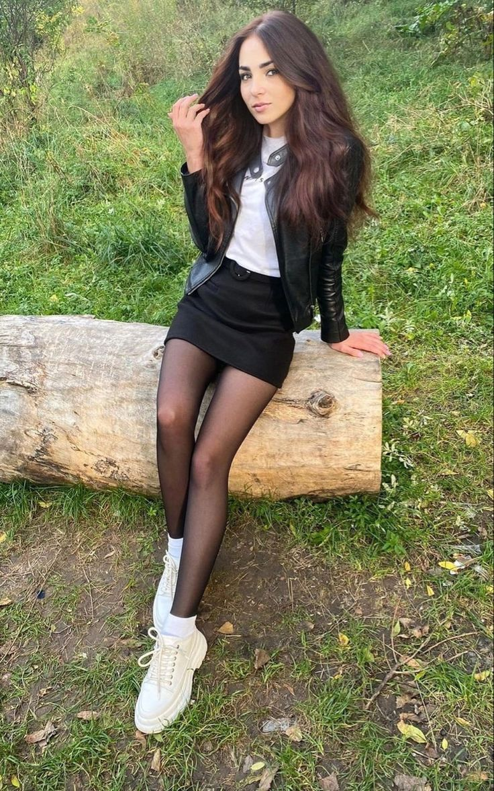
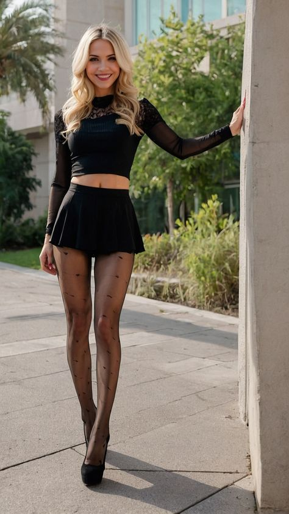
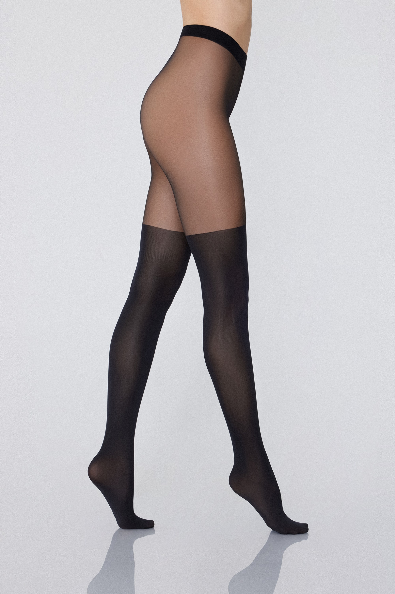
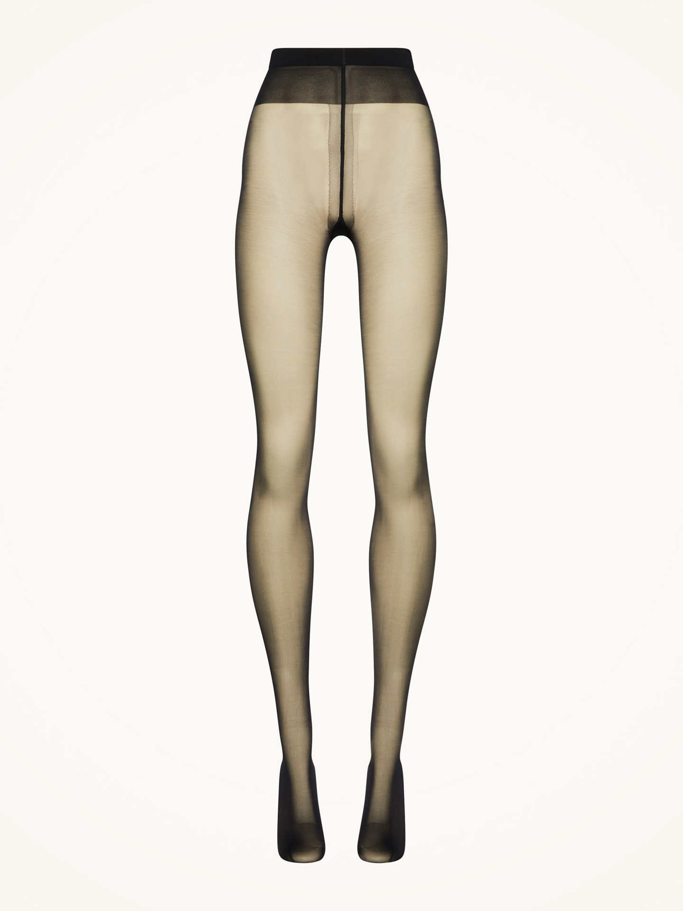

Материал. Силуэт. Ощущение.
Красота.
В деталях.
Прозрачность, блеск, рисунок. Смотрите крупно, замечайте фактуру и находите новые сочетания.
Смотреть галерею ↗Найти свою пару →
Лента публикаций
Сейчас в
чулочной моде.
Коллекции, сочетания и новые взгляды на знакомую вещь. Публикации брендов и модных изданий в одной ленте.
Последняя успешная проверка: 16.11.2026 06:39 UTC.
Календарь носочно-чулочного мира: памятные даты и праздники, которые стоит отметить
Серые колготки становятся альтернативой классическим чёрным
Hot Take: Wear Leggings Like This If You Want to Avoid Looking "Lazy" This Winter
Тёплые колготки 2026: энциклопедия материалов, технологий и стильных комбинаций
Kunert, Philippe Matignon и Trasparenze делают ставку на фактурные колготки
Как обновляется лента и откуда новости
Источники проверяются по расписанию каждые 15 минут. Возможны задержки сервиса и самих изданий. Новость появляется после попадания в RSS или поисковую ленту, а не в момент любой публикации в интернете.
Заголовки оставлены на языке оригинала. Дата рядом с материалом принадлежит источнику; время проверки ленты указано отдельно. Для ссылок с отметкой Google News сначала открывается агрегатор. При сбое сохраняем предыдущие записи.
- Google News · выбранные изданияДоступен
- Who What WearДоступен
- FashionUnitedДоступен
- Swedish StockingsДоступен
- SnagДоступен
- BracatusВременно недоступен
Колготки в гардеробе
Вещи складываются
в образ.
Косуха, трикотаж, юбка или шорты. Женские и мужские сочетания из вашей подборки.



Все семь образов ↗Подборка владельца ТОНКО · авторы кадров не установлены
Новый журнал ТОНКО
Внимательнее
к каждой детали.
Шесть историй о свете, узорах, устройстве вещи и людях за брендами. Начните с того, что вам любопытно.
Выбрать, что почитать ↗ Кружево. Подойдите ближе ↗
Кружево. Подойдите ближе ↗У каждой фактуры
свой характер.
Графичная сетка, кружево и мерцание. Три способа сделать колготки главным акцентом образа.


Попробовать, а не только прочитать
Что изменится,
если выбрать 20 DEN?
Сравните плотность, разберите конструкцию и соберите критерии своей пары.
Открыть мастерскую выбора ↗
За пределами
привычного.

Имена, которые
меняли индустрию.
43 бренда: история, технологии и конкретные модели с источниками.
 Открыть видеотеку ↗
Открыть видеотеку ↗Теперь в движении
Смотреть.
Сравнивать. Замечать.
Три фильма о производстве с плеером Vimeo, обзоры и примерки YouTube. Выберите тему и сохраните ролики на потом.
Все видео →